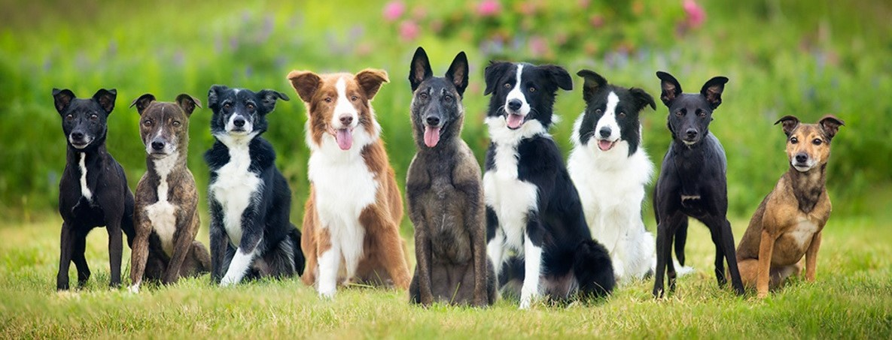

Мета блогу
Допомогти майбутнім, або просто, власникам дізнатись більше про їх олюбленця. Кожна сторінка, яка присвячена породі, містить інформацію щодо догляду, це може допомогти дізнатись тонкощів утримання саме вашого песика.
Правила утримання і догляду за домашніми тваринами
*інформація була взята з цього ресурсу.
Норми утримання домашніх тварин визначені Законом України “Про захист тварин від жорстокого поводження” та Рішенням Київської міської ради від 27.10.2007 № 1079/3912, яким затверджені “Правила утримання домашніх собак та котів у м.Києві”. Відповідно до даних Правил
Власники тварин повинні:
- поставити тварину на особистий облік відповідно до Правил в уповноваженому органі КМДА https://pets.kyivcity.gov.ua;
- забезпечити тварині можливість у задоволені її природних потреб в їжі, воді, сні, рухах, у природній активності та інших;
- забезпечити постійний догляд, ветеринарний нагляд;
- навчати собак за визнаними навчальними програмами;
- забезпечувати тишу з 22.00 до 08.00 год та не порушувати громадський порядок;
- дотримуватись санітарно-гігієнічних норм утримання тварин, зокрема, прибирати екскременти в місцях загального користування;
- запобігати прояву небезпечних дій по відношенню до людей, інших тварин і майна;
- упереджувати можливість безконтрольного виходу тварин за межі їх утримання.
Власникам тварин заборонено:
- жорстоко поводитись з тваринами, знущатися, знищувати їх;
- проводити собачі бої, а також селекціонувати, навчати та використовувати собак для боїв;
- використовувати собак та котів для отримання з них м'яса і шкурок;
- навчати собак атакувати людину у життєвоважливі органи;
- купати тварин на території міських пляжів та у фонтанах.
Де та за яких умов можна утримувати собак та котів:
- у квартирах, де проживає одна сім'я, за кількістю, обмеженою можливістю забезпечення їм умов утримання відповідно до вимог цих Правил;
- у квартирах, де проживає кілька сімей, лише за письмовою згодою всіх повнолітніх мешканців квартири;
- на території присадибної земельної ділянки за умови, якщо огорожа цієї ділянки забезпечує ізоляцію тварини на цій території та наявна попереджувальна табличка про існування тварини;
- на території і/або приміщенні, що не належить власнику тварини на правах власності за умови письмової згоди власника території і/або приміщення;
- у куточках живої природи у встановленому порядку за погодженням з державними органами санітарно-епідеміологічної служби та ветеринарної медицини;
- на територіях об'єктів будівництва, підприємств, установ, організацій за умов наявності обладнаних приміщень та попереджувальної таблички про існування тварини.
Забороняється утримувати
- собак та котів у місцях загального користування (коридорах, приміщеннях підвального типу, на сходах, горищах тощо);
незареєстрованих належним чином собак.
